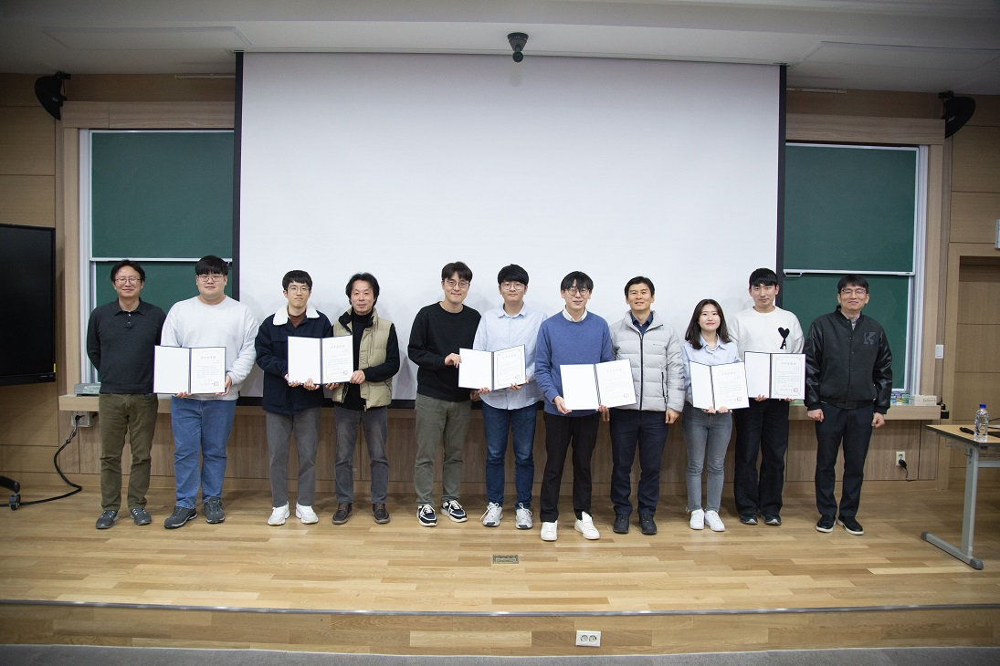

Boric Acid-Mediated Sol-Gel Construction of Transparent, Photoactive TiO2 Films
Congratulations, Su Yeon!
Su Yeon's new paper entitled "Boric Acid-Mediated Sol-Gel Construction of Transparent, Photoactive TiO2 Films" is published in Chemical Communications.
Single-Cell Nanoencapsulation: Chemical Synthesis of Artificial Cell-in-Shell Spores
Congratulations, HyeongBin!
HyeongBin's new review entitled "Single-Cell Nanoencapsulation: Chemical Synthesis of Artificial Cell-in-Shell Spores" is published in Chemical Reviews.
Autonomous Chemo-Metabolic Construction of Anisotropic Cell-in-Shell Nanobiohybrids in Enzyme-Powered Cell Microrobots
Congratulations, Nayoung!
Nayoung's new paper entitled "Autonomous Chemo-Metabolic Construction of Anisotropic Cell-in-Shell Nanobiohybrids in Enzyme-Powered Cell Microrobots" is published in Science Advances.
Ultrafast, Cytocompatible Mineralization of Calcium Phosphate in Formation of Stratified Nanoshells of Artificial Spores
Congratulations, Tai!
Tai's new paper entitled "Ultrafast, Cytocompatible Mineralization of Calcium Phosphate in Formation of Stratified Nanoshells of Artificial Spores" is published in Chemical Communications.
Cytoprotective Nanoencapsulation of Probiotic Cells within Fe3+–Phytic Acid Nanoshells
Congratulations, Sang Yeong!
Sang Yeong's new paper entitled "Cytoprotective Nanoencapsulation of Probiotic Cells within Fe3+–Phytic Acid Nanoshells" is published in Langmuir.
Material-Independent Film Formation and Autonomous Degradation of Cu2+–Tetrahydroxy-1,4-Benzoquinone Metal–Organic Complex
Congratulations, HyeongBin!
HyeongBin's new paper entitled "Material-Independent Film Formation and Autonomous Degradation of Cu2+–Tetrahydroxy-1,4-Benzoquinone Metal–Organic Complex" is published in Nanoscale.
Construction of Liposome-Based Extracellular Artificial Organelles on Individual Living Cells
Congratulations, Seoin!
Seoin's new paper entitled "Construction of Liposome-Based Extracellular Artificial Organelles on Individual Living Cells" is published in Angewante Chemie International Edition.
Biocompatible Hydrogel Coating on Single Living Cells Through Visible Light-Induced Polymerization
Congratulations, Young Jae!
Young Jae's new paper entitled "Biocompatible Hydrogel Coating on Single Living Cells Through Visible Light-Induced Polymerization" is published in Chemical Communications.
Award - Excellent Thesis Award at the Department Seminar 2024

Congratulations, HyeongBin!
HyeongBin Rheem won the Excellent Thesis Award at the Department Seminar 2024 in KAIST.
Iron Gall Ink Revisited: Visible Light-Induced, Eosin-Mediated Acceleration of Fe2+ Oxidation in Pattern Nanoarchitectonics of Fe3+-Tannic Acid Films
Congratulations, Hyunwoo!
Hyunwoo's new paper entitled "Iron Gall Ink Revisited: Visible Light-Induced, Eosin-Mediated Acceleration of Fe2+ Oxidation in Pattern Nanoarchitectonics of Fe3+-Tannic Acid Films" is published in Langmuir.
Biphasic Water–Oil Systems for Functional Augmentation of Probiotic Lactobacillus acidophilus Nanoencapsulated in Luteolin–Fe3+ Shells
Congratulations, Tai!
Tai's new paper entitled "Biphasic Water–Oil Systems for Functional Augmentation of Probiotic Lactobacillus acidophilus Nanoencapsulated in Luteolin–Fe3+ Shells" is published in Chemical Communications.
Promoting Effects of Cannabidiol on Neurite Growth and Neuronal Development in Neuron–Astrocyte Sandwich Coculture
Congratulations, Jungnam!
Jungnam's new paper entitled "Promoting Effects of Cannabidiol on Neurite Growth and Neuronal Development in Neuron–Astrocyte Sandwich Coculture" is published in Bulletin of the Korean Chemical Society.
A Micrometric Transformer: Compositional Nanoshell Transformation of Fe3+–Trimesic-Acid Complex with Concomitant Payload Release in Cell-in-Catalytic-Shell Nanobiohybrids
Congratulations, Joohyouck!
Joohyouck's new paper entitled "A Micrometric Transformer: Compositional Nanoshell Transformation of Fe3+–Trimesic-Acid Complex with Concomitant Payload Release in Cell-in-Catalytic-Shell Nanobiohybrids" is published in Advanced Science.
MolNet_Equi: A Chemically Intuitive, Rotation-Equivariant Graph Neural Network
Congratulations, Jihoo!
Jihoo's new paper entitled "MolNet_Equi: A Chemically Intuitive, Rotation-Equivariant Graph Neural Network" is published in Chemistry – An Asian Journal.
In Vitro Induction of In Vivo-Relevant Stellate Astrocytes in 3D Brain-Derived, Decellularized Extracellular Matrices
Congratulations, Sol!
Sol's new paper entitled “In Vitro Induction of In Vivo-Relevant Stellate Astrocytes in 3D Brain-Derived, Decellularized Extracellular Matrices” is published in Acta Biomaterialia.
Functional Surfaces with Zwitterionic Carboxybetaine L-3,4-dihydroxyphenylalanine: Synthesis, Coating, and Antifouling Applications
Congratulations, Inae!
Inae's new paper entitled “Functional Surfaces with Zwitterionic Carboxybetaine L-3,4-dihydroxyphenylalanine: Synthesis, Coating, and Antifouling Applications” is published in Progress in Organic Coatings.
Tandem-Biocatalysis Reactors Constructed by Topological Evolution of CaCO3 Particles into Hollow Metal Hydroxide Spheres
Congratulations, Sang Yeong!
Sang Yeong's work on hollow capsule, published in Nature Communications (titled Tandem-Biocatalysis Reactors Constructed by Topological Evolution of CaCO3 Particles into Hollow Metal Hydroxide Spheres), was highlighted in Nature Catalysis.
Neutralization of Cannabidiol Neurotoxicity in Neuron–Astrocyte Sandwich Co-Culture
Congratulations, Jungnam!
Jungnam's work on cannabidiol (CBD), published in Advanced Biology (titled Neutralization of Cannabidiol Neurotoxicity in Neuron-Astrocyte Sandwich Co-Culture), was featured in Advanced Science News.
Fugetaxis of Cell-in-Catalytic-Coat Nanobiohybrids in Glucose Gradients
Congratulations, HyeongBin!
HyeongBin's new paper entitled “Fugetaxis of Cell-in-Catalytic-Coat Nanobiohybrids in Glucose Gradients” is published in Small.
Vortex-Assisted, Nanoarchitectonic Manipulation of Microparticles with Flavonoid–Fe3+ Complex in Biphasic Water–Oil Systems
Congratulations, Tai!
Tai's new paper entitled “Vortex-Assisted, Nanoarchitectonic Manipulation of Microparticles with Flavonoid–Fe3+ Complex in Biphasic Water–Oil Systems” is published in Chemical Communications.
Bioempowerment of Therapeutic Living Cells by Single-Cell Surface Engineering
Congratulations, Seoin!
Seoin's new paper entitled “Bioempowerment of Therapeutic Living Cells by Single-Cell Surface Engineering” is published in Advanced Therapeutics.
A Natural Virucidal and Microbicidal Spray Based on Polyphenol–Iron Sols
Congratulations, Sang Yeong!
Sang Yeong's new paper entitled “A Natural Virucidal and Microbicidal Spray Based on Polyphenol–Iron Sols” is published in ACS Applied Bio Materials.
Young Jae Jung has joined the group. Welcome!
Cytoprotection of Probiotic Lactobacillus acidophilus with Artificial Nanoshells of Nature-Derived Eggshell Membrane Hydrolysates and Coffee Melanoidins in Single-Cell Nanoencapsulation
Congratulations, Sang Yeong!
Sang Yeong's new paper entitled “Cytoprotection of Probiotic Lactobacillus acidophilus with Artificial Nanoshells of Nature-Derived Eggshell Membrane Hydrolysates and Coffee Melanoidins in Single-Cell Nanoencapsulation” is published in Polymers.
Ji Yoon Lee has joined the group. Welcome!
MolNet: A Chemically Intuitive Graph Neural Network for Prediction of Molecular Properties
Congratulations, Yeji!
Yeji's new paper entitled “MolNet: A Chemically Intuitive Graph Neural Network for Prediction of Molecular Properties” is published in Chemistry - An Asian Journal.
Cell-in-Catalytic-Shell Nanoarchitectonics: Catalytic Empowerment of Individual Living Cells by Single-Cell Nanoencapsulation
Congratulations, Ho Jae!
Ho Jae's new paper entitled “Cell-in-Catalytic-Shell Nanoarchitectonics: Catalytic Empowerment of Individual Living Cells by Single-Cell Nanoencapsulation” is published in Advanced Materials.
Development of A Chemically Intuitive Filter for Chemical Graph Convolutional Network
Congratulations, Yoonho!
Yoonho's new paper entitled “Development of A Chemically Intuitive Filter for Chemical Graph Convolutional Network” is published in Bulletin of the Korean Chemical Society.
Hydrogen Bonding-Based Layer-by-Layer Assembly of Nature-Derived Eggshell Membrane Hydrolysates and Coffee Melanoidins in Single-Cell Nanoencapsulation
Congratulations, Sang Yeong!
Sang Yeong's new paper entitled “Hydrogen Bonding-Based Layer-by-Layer Assembly of Nature-Derived Eggshell Membrane Hydrolysates and Coffee Melanoidins in Single-Cell Nanoencapsulation” is published in ChemNanoMat.
Enzyme-Mediated Kinetic Control of Fe3+–Tannic Acid Complexation for Interface Engineering
Congratulations, Ho Jae!
Ho Jae's new paper entitled “Enzyme-Mediated Kinetic Control of Fe3+–Tannic Acid Complexation for Interface Engineering” is published in ACS Applied Materials & Interfaces.
In-Vitro Studies on Therapeutic Effects of Cannabidiol in Neural Cells: Neurons, Glia, and Neural Stem Cells
Congratulations, Jungnam!
Jungnam's new paper entitled “In-Vitro Studies on Therapeutic Effects of Cannabidiol in Neural Cells: Neurons, Glia, and Neural Stem Cells” is published in Molecules.
Rotational Variance-Based Data Augmentation in 3D Graph Convolutional Network
Congratulations, Jihoo!
Jihoo's new paper entitled “Rotational Variance-Based Data Augmentation in 3D Graph Convolutional Network” is published in Chemistry - An Asian Journal.
Jinwoo Lee, Yoonho Jeong, Su Yeon Rhee, and Duc Tai Nguyen have joined the group. Welcome!
Enzyme-mediated film formation of melanin-like species from ortho-diphenols: Application to single-cell nanoencapsulation
Congratulations, Nayoung!
Nayoung's new paper entitled “Enzyme-mediated film formation of melanin-like species from ortho-diphenols: Application to single-cell nanoencapsulation” is published in Applied Surface Science Advances.
A Decade of Advances in Single-Cell Nanocoating for Mammalian Cells
Congratulations, Ho Jae!
Ho Jae's new paper entitled “A Decade of Advances in Single-Cell Nanocoating for Mammalian Cells” is published in Advanced Healthcare Materials.
Effects of Pooling Operations on Prediction of Ligand Rotation-Dependent Protein-Ligand Binding in 3D Graph Convolutional Network
Congratulations, Yeji!
Yeji's new paper entitled “Effects of Pooling Operations on Prediction of Ligand Rotation-Dependent Protein-Ligand Binding in 3D Graph Convolutional Network” is published in Bulletin of the Korean Chemical Society.
Neuronal Migration on Silicon Microcone Arrays with Different Pitches
Congratulations, Jeongyeon!
Jeongyeon's new paper entitled “Neuronal Migration on Silicon Microcone Arrays with Different Pitches” is published in Advanced Healthcare Materials.
Neuroprotective Effect of Cannabidiol against Hydrogen Peroxide in Hippocampal-Neuron Culture
Congratulations, Jungnam!
Jungnam's new paper entitled “Neuroprotective Effect of Cannabidiol against Hydrogen Peroxide in Hippocampal-Neuron Culture” is published in Cannabis Cannabinoid Res.
Iron Gall Ink Revisited: A Surfactant-Free Emulsion Technology for Black Hair-Dyeing Formulation
Congratulations, Sang Yeong!
Sang Yeong's new paper entitled “Iron Gall Ink Revisited: A Surfactant-Free Emulsion Technology for Black Hair-Dyeing Formulation” is published in Cosmetics.
Single-Cell Nanoencapsulation of Saccharomyces cerevisiae by Cytocompatible Layer-by-Layer Assembly of Eggshell Membrane Hydrolysate and Tannic Acid
Congratulations, Sang Yeong!
Sang Yeong's new paper entitled “Single-Cell Nanoencapsulation of Saccharomyces cerevisiae by Cytocompatible Layer-by-Layer Assembly of Eggshell Membrane Hydrolysate and Tannic Acid” is published in Advanced Nanobiomed Research.
Reversed Anionic Hofmeister Effect in Metal-Phenolic-Based Film Formation
Congratulations, Gyeongwon!
Gyeongwon's new paper entitled “Reversed Anionic Hofmeister Effect in Metal-Phenolic-Based Film Formation” is published in Langmuir.
Layer-Wise Relevance Propagation of InteractionNet Explains Protein-Ligand Interactions at the Atom Level
Congratulations, Hyeoncheol!
Hyeoncheol's new paper entitled “Layer-Wise Relevance Propagation of InteractionNet Explains Protein-Ligand Interactions at the Atom Level” is published in Scientific Reports.
Ascorbic Acid-Mediated Reductive Disassembly of Fe3+-Tannic Acid Shells in Degradable Single-Cell Nanoencapsulation
Congratulations, Ho Jae!
Ho Jae's new paper entitled “Ascorbic Acid-Mediated Reductive Disassembly of Fe3+-Tannic Acid Shells in Degradable Single-Cell Nanoencapsulation” is published in Chemical Communications.
Fabrication and Characterization of Neurocompatible Ulvan-Based Layer-by-Layer Films
Congratulations, Hee Chul!
Hee Chul's new paper entitled “Fabrication and Characterization of Neurocompatible Ulvan-Based Layer-by-Layer Films” is published in Langmuir.
Dynamic Electrophoretic Assembly of Metal-Phenolic Films: Accelerated Formation and Cytocompatible Detachment
Congratulations, Gyeongwon!
Gyeongwon's new paper entitled “Dynamic Electrophoretic Assembly of Metal-Phenolic Films: Accelerated Formation and Cytocompatible Detachment” is published in Chemistry of Materials.
Single-Cell Nanoencapsulation: from Passive to Active Shells
Congratulations, Wongu!
Wongu's new paper entitled “Single-Cell Nanoencapsulation: from Passive to Active Shells” is published in Advanced Materials.
Enzymatically Degradable, Starch-Based Layer-by-Layer Films: Application to Cytocompatible Single-Cell Nanoencapsulation
Congratulations, Hee Chul!
Hee Chul's new paper entitled “Enzymatically degradable, starch-based layer-by-layer films: application to cytocompatible single-cell nanoencapsulation” is published in Soft Matter.
Neuro-Taxis: Neuronal Movement in Gradients of Chemical and Physical Environments
Congratulations, Jeongyeon!
Jeongyeon's new paper entitled “ Neuro-Taxis: Neuronal Movement in Gradients of Chemical and Physical Environments” is published in Developmental Neurobiology.
Inae Han, Sang Yeong Han, HyeongBin Rheem, Seoin Yang, Yeji Kim, and Jihoo Kim have joined the group. Welcome!
Astrocyte-Encapsulated Hydrogel Microfibers Enhance Neuronal Circuit Generation
Congratulations, Beom Jin!
Beom Jin's new paper entitled “Astrocyte-Encapsulated Hydrogel Microfibers Enhance Neuronal Circuit Generation” is published in Advanced Healthcare Materials.
Coffee Melanoidin-Based Multipurpose Film Formation: Application to Single-Cell Nanoencapsulation
Congratulations, Ji Yup!
Ji Yup's new paper entitled “Coffee Melanoidin-Based Multipurpose Film Formation: Application to Single-Cell Nanoencapsulation” is published in ChemNanoMat.
The Biomolecular Corona in 2D and Reverse: Patterning Metal-Phenolic Networks on Proteins, Lipids, Nucleic Acids, Polysaccharides, and Fingerprints
Congratulations, Gyeongwon!
Gyeongwon's new paper entitled “The Biomolecular Corona in 2D and Reverse: Patterning Metal-Phenolic Networks on Proteins, Lipids, Nucleic Acids, Polysaccharides, and Fingerprints” is published in Advanced Functional Materials.
Award - Graduate Student Award at the E-MRS Fall Meeting 2019
 Congratulations, Wongu!
Wongu Youn received the Graduate Student Award at the E-MRS Fall Meeting 2019, which was held in Warsaw, Poland.
Congratulations, Wongu!
Wongu Youn received the Graduate Student Award at the E-MRS Fall Meeting 2019, which was held in Warsaw, Poland.
Nayoung Kim and Hyunwoo Choi have joined the group. Welcome!
Enhanced Deep-Learning Prediction of Molecular Properties via Augmentation of Bond Topology
Congratulations, Hyeoncheol!
Hyeoncheol's new paper entitled “Enhanced Deep-Learning Prediction of Molecular Properties via Augmentation of Bond Topology” is published in ChemMedChem.
Deep Learning Algorithm of Graph Convolutional Network: A Case of Aqueous Solubility Problems
Congratulations, Hyeoncheol!
Hyeoncheol's new paper entitled “Deep Learning Algorithm of Graph Convolutional Network: A Case of Aqueous Solubility Problems” is published in Bulletin of the Korean Chemical Society.
In-Situ Derivatization and Headspace Solid-Phase Microextraction for GC-MS Analysis of Alkyl Methylphosphonic Acids Following Solid-Phase Extraction Using Thin Film
Congratulations, Hyunsuk!
Hyunsuk's new paper entitled “In-Situ Derivatization and Headspace Solid-Phase Microextraction for GC-MS Analysis of Alkyl Methylphosphonic Acids Following Solid-Phase Extraction Using Thin Film” is published in Journal of Chromatography A.
Iron Gall Ink Revisited: Natural Formulation for Black Hair-Dyeing
Congratulations, Sang Yeong!
Sang Yeong's new paper entitled “Iron Gall Ink Revisited: Natural Formulation for Black Hair-Dyeing” is published in Cosmetics.
Gyeongwon Yun has joined the group. Welcome!
Solid-Phase Extraction of Nerve Agent Degradation Products Using Poly[(2-(Methacryloyloxy)ethyl)trimethylammonium Chloride] Thin Films
Congratulations, Hyunsuk!
Hyunsuk's new paper entitled “Solid-Phase Extraction of Nerve Agent Degradation Products Using Poly[(2-(Methacryloyloxy)ethyl)trimethylammonium Chloride] Thin Films” is published in Talanta.
Iron gall ink revisited: hierarchical formation of Fe(III)–tannic acid coacervate particles in microdroplets for protein condensation
Congratulations, Beom Jin!
Beom Jin's new paper entitled “Iron gall ink revisited: hierarchical formation of Fe(III)–tannic acid coacervate particles in microdroplets for protein condensation” is published in Chemical Communications.
Iron Gall Ink Revisited: In Situ Oxidation of Fe(II)-Tannin Complex for Fluidic-Interface Engineering
Congratulations, Ho Jae!
Ho Jae's new paper entitled “Iron Gall Ink Revisited: In Situ Oxidation of Fe(II)-Tannin Complex for Fluidic-Interface Engineering” is accepted in Advanced Materials.
Three-Dimensionally Embedded Graph Convolutional Network (3DGCN) for Molecule Interpretation
Congratulations, Hyeoncheol!
Hyeoncheol's new paper entitled “Three-Dimensionally Embedded Graph Convolutional Network (3DGCN) for Molecule Interpretation” is published in arXiv preprint.
Multiplexed Metabolic Labeling of Gycoconjugates in Polarized Primary Cerebral Cortical Neurons
Congratulations, Ji Yu!
Ji Yu's new paper entitled “Multiplexed Metabolic Labeling of Gycoconjugates in Polarized Primary Cerebral Cortical Neurons” is accepted in Chemistry - An Asian Journal.
Hierarchical Neurotemplated Scaffolds Simulate Pioneering Effects and Increase Neurite Complexity in Primary Hippocampal Neurons
Congratulations, Beom Jin!
Beom Jin's new paper entitled “Hierarchical Neurotemplated Scaffolds Simulate Pioneering Effects and Increase Neurite Complexity in Primary Hippocampal Neurons” is accepted in Advanced Healthcare Materials.
Nanotopography-Promoted Formation of Axon Collateral Branches of Hippocampal Neurons
Congratulations, Jeongyeon!
Jeongyeon's new paper entitled “Nanotopography-Promoted Formation of Axon Collateral Branches of Hippocampal Neurons” is accepted in Small.
Enzymatic Film Formation of Nature-Derived Phenolic Amines
Congratulations, Ji Yup!
Ji Yup's new paper entitled “Enzymatic Film Formation of Nature-Derived Phenolic Amines” is accepted in Nanoscale.
Joohyouck Park and Jungnam Kim have joined the group. Welcome!
Accelerated Development of Hippocampal Neurons and Limited Adhesion of Astrocytes on Negatively Charged Surfaces
Congratulations, Mi-Hee!
Mi-Hee's new paper entitled “Accelerated Development of Hippocampal Neurons and Limited Adhesion of Astrocytes on Negatively Charged Surfaces” is accepted in Langmuir.
Strategic Advances in Formation of Cell-in-Shell Structures: from Syntheses to Applications
Congratulations, Beom Jin!
Beom Jin's new review entitled “Strategic Advances in Formation of Cell-in-Shell Structures: from Syntheses to Applications” is accepted in Advanced Materials.
Neuro-Compatible Metabolic Glycan Labeling of Primary Hippocampal Neurons in Non-Contact, Sandwich-Type Neuron-Astrocyte Co-Culture
Congratulations, Ji Yu!
Ji Yu's new paper entitled “Neuro-Compatible Metabolic Glycan Labeling of Primary Hippocampal Neurons in Non-Contact, Sandwich-Type Neuron-Astrocyte Co-Culture” is accepted in ACS Chemical Neuroscience.
Cytoprotective Encapsulation of Individual Jurkat T Cells within Durable TiO2 Shells for T Cell Therapy
Congratulations, Wongu!
Wongu's new paper entitled “Cytoprotective Encapsulation of Individual Jurkat T Cells within Durable TiO2 Shells for T Cell Therapy” is accepted in Angewante Chemie International Edition.
Biphasic Supramolecular Self-Assembly of Ferric Ion and Tannic Acid across Interfaces for Nanofilm Formation
Congratulations, Beom Jin!
Beom Jin's new paper entitled “Biphasic Supramolecular Self-Assembly of Ferric Ion and Tannic Acid across Interfaces for Nanofilm Formation” is accepted in Advanced Materials.
Sunghoon Joo, Sol Han and Won Il Kim have joined the group. Welcome!
Interview - Protective polymer coats 'grown' on cells
Prof. Choi had an interview with Chemistry World as "Protective polymer coats 'grown' on cells"
Interview - C&EN talks with Insung Choi, cell protector
Prof. Choi had an interview with Chem. Eng. News as "C&EN talks with Insung Choi, cell protector."
Chem. Eng. News, 2016, 94(43), 23-24.
Cytocompatible Polymer Grafting from Individual Living Cells by ARGET ATRP
Congratulations, Ji Yup!
Ji Yup's new paper entitled “Cytocompatible Polymer Grafting from Individual Living Cells by Atom-Transfer Radical Polymerization” is accepted in Angewante Chemie International Edition.
Guest Editor - Biomimetic interfaces in biomedical devices
Prof. Choi was invited as a guest editor of Advanced Healthcare Materials along with Prof. Ali Khademhosseini and Prof. João F. Mano, special issue as "Biomimetic interfaces in biomedical devices". This special issue is dedicated to topics related with science and engineering of biomimetic interfaces that could tune important properties such as biomineralization, cell recruitment/behavior/targeting, adhesiveness and wettability, adaptability and response to external stimuli, self-assembly or protein adsorption/reorganization.
Interview - A Conversation with Insung Choi
Prof. Choi had an interview with ACS Central Science as "A Conversation with Insung Choi, The chemist coats cells with silica shells to help them survive and thrive in diverse applications."
ACS Cent. Sci., 2016, 2(9), 579–580.
Guest Editor - Advance of Polymers Applied to Biomedical Applications: Cell Scaffolds
Prof. Choi was invited as a guest editor of Polymers, special issue as "Advance of Polymers Applied to Biomedical Applications: Cell Scaffolds". This special issue is dedicated to highlight the recent achievements in the use of polymers as cell scaffolds on a broad scale, not only limited to the use of polymers as cell-culture scaffolds, but also including polymer-based approaches for controlling interfacial interactions of cells in vitro.
Cell-in-Shell Hybrids: Chemical Nanoencapsulation of Individual Cells
A new review paper entitled “Cell-in-Shell Hybrids: Chemical Nanoencapsulation of Individual Cells” is published in Accounts of Chemical Research.
Acc. Chem. Res., 2016, 49(5), 792-800.
Guest Editor - Nanobiointerfaces: Interfaces Between Biological Entities and Nanomaterials
Prof. Choi was invited as a guest editor of ChemNanoMat, special issue on Nanobiointerfaces. This special issue is dedicated to recent interdisciplinary efforts in nanobiointerfaces, from synthesis and characterization to applications.
ChemNanoMat, 2016, 2(5), 321–322.
Wongu Youn and Sohee Choi have joined the group. Welcome!